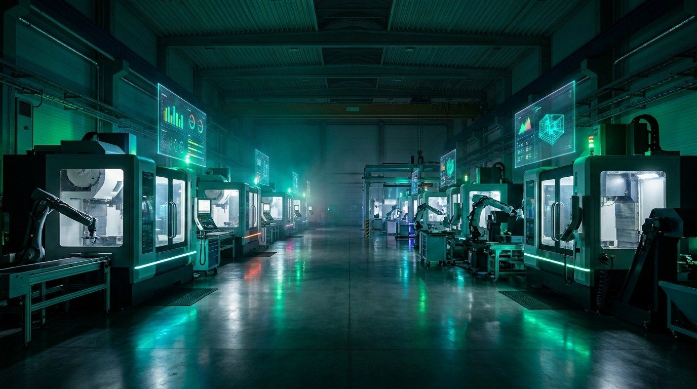

Մեքենաները, շենքերն ու սարքավորումները ընկերության «երկաթե կմախքն» են։ Այստեղ չափել ենք՝ որքան են դրանք, որքան են մաշված, որքան արագ են նորացվում և քանի դրամ շահույթ է բերում յուրաքանչյուր դրամ ՀՄ։ Հեղինակ՝ Հրաչյա Ասլանյան։

| Ցուցանիշ | Նշան | 2024 | 2025 | Δ |
|---|---|---|---|---|
| Հիմնական միջոցների միջին տարեկան արժեք | ՀՄ | 200,000 | 250,000 | +50,000 |
| Հիմնական միջոցների տարեսկզբի մնացորդ | ՀՄտս | 300,000 | 300,000 | 0 |
| Տարեսկզբի կուտակված մաշվածություն | ԿՄտս | 80,000 | 100,000 | +20,000 |
| Հիմնական միջոցների մուտք | ՀՄմուտք | 30,000 | 60,000 | +30,000 |
| Հիմնական միջոցների ելք | ՀՄելք | 50,000 | 40,000 | −10,000 |
| Հիմնական միջոցների տարեվերջի մնացորդ | ՀՄտվ | 300,000 | 340,000 | +40,000 |
| Տարեվերջի կուտակված մաշվածություն | ԿՄտվ | 60,000 | 80,000 | +20,000 |
| Դուրսգրված մաշվածություն | ՀՄդ.մաշվ | 40,000 | 50,000 | +10,000 |
| Մեքենասարքավորումների միջին տարեկան արժեք | ՄՍ | 50,000 | 55,000 | +5,000 |
| Հասույթ | Հ | 10,000,000 | 13,000,000 | +3,000,000 |
| Զուտ շահույթ | ԶՇ | 800,000 | 950,000 | +150,000 |
| Աշխատողների միջին ցուցակային թվաքանակ | Քա | 30 | 30 | 0 |
| Արտադրանքի ծավալ | Ա | 8,000,000 | 9,360,000 | +1,360,000 |
| Ցուցանիշ | Նշան | 2024 | 2025 | Δ | Բանաձև |
|---|---|---|---|---|---|
| Աշխատանքի զինվածություն | Գազ | 6,667 | 8,333 | +1,667 | ՀՄ ÷ Քա |
| Տեխնիկական զինվածություն | Գտզ | 1,667 | 1,833 | +167 | ՄՍ ÷ Քա |
| ՀՄ հարաբերական տնտեսում (−) / գերածախս (+) | ±ΔՀՄհար.տնտ | x | 16,000 | x | ՀՄ₁ − ՀՄ₀ × Ա₁/Ա₀ |
| Նորացման գործակից | Գնոր | 0.100 | 0.176 | +0.076 | ՀՄմուտք ÷ ՀՄտվ |
| Դուրսգրման գործակից | Գդգ | 0.167 | 0.133 | −0.033 | ՀՄելք ÷ ՀՄտս |
| Տարեսկզբի մաշվածության գործակից | Գմշ.տս | 0.267 | 0.333 | +0.067 | ԿՄտս ÷ ՀՄտս |
| Տարեվերջի մաշվածության գործակից | Գմշ.տվ | 0.200 | 0.235 | +0.035 | ԿՄտվ ÷ ՀՄտվ |
| Տարեսկզբի պիտանելիության գործակից | Գպտ.տս | 0.733 | 0.667 | −0.067 | 1 − Գմշ.տս |
| Տարեվերջի պիտանելիության գործակից | Գպտ.տվ | 0.800 | 0.765 | −0.035 | 1 − Գմշ.տվ |
| ՀՄ շահութաբերություն, % | ՇԲԹՀՄ | 400.00 | 380.00 | −20.00 | ԶՇ ÷ ՀՄ × 100 |
| Իրացման շահութաբերություն, % | ՇԲԹիրաց | 8.00 | 7.31 | −0.69 | ԶՇ ÷ Հ × 100 |
| ՀՄ հատույց (ֆոնդահատույց) | ՀՏ | 50.00 | 52.00 | +2.00 | Հ ÷ ՀՄ |
| ΔՇԲԹՀՄ՝ իրացման շահութաբերության հաշվին | ±ΔՇԲԹ(ՀՄ)(ՇԲԹիրաց) | x | x | −34.62 | ΔՇԲԹիրաց × ՀՏ₀ |
| ΔՇԲԹՀՄ՝ ֆոնդահատույցի հաշվին | ±ΔՇԲԹ(ՀՄ)(ՀՏ) | x | x | +14.62 | ΔՀՏ × ՇԲԹիրաց₁ |
ՇԲԹՀՄ = ՇԲԹիրաց × ՀՏΔ(ՇԲԹիրաց) = ΔՇԲԹիրաց × ՀՏ₀Δ(ՀՏ) = ΔՀՏ × ՇԲԹիրաց₁